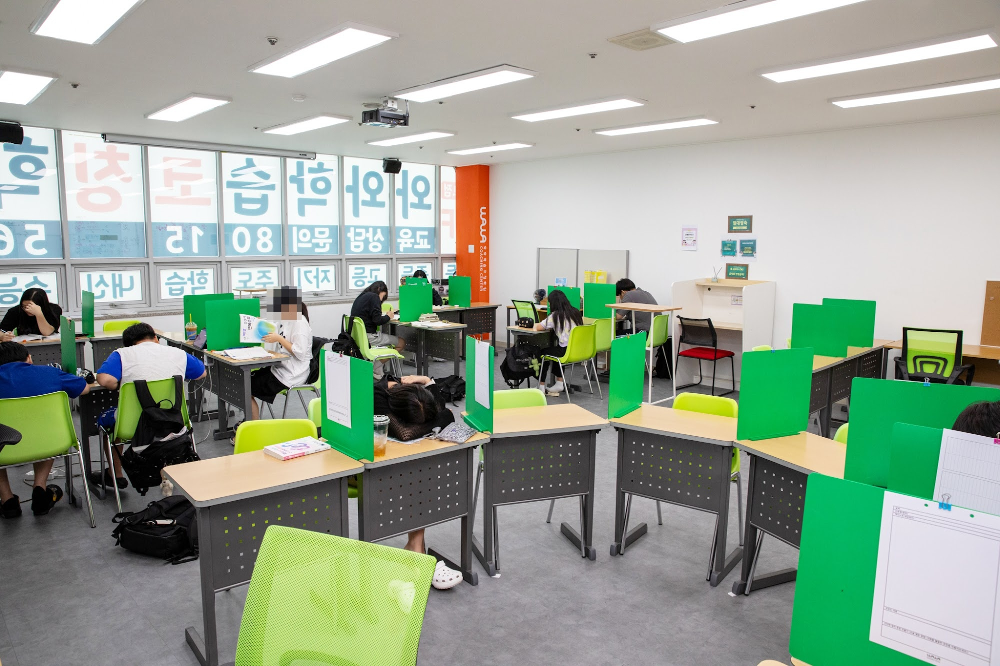
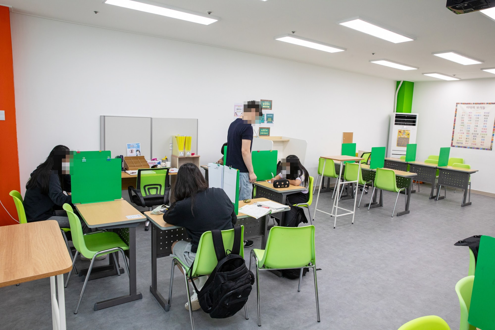
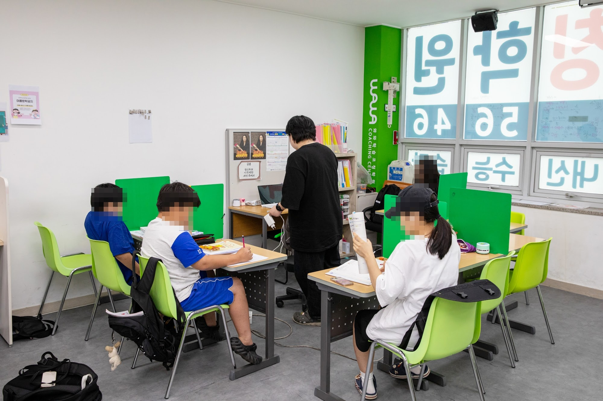
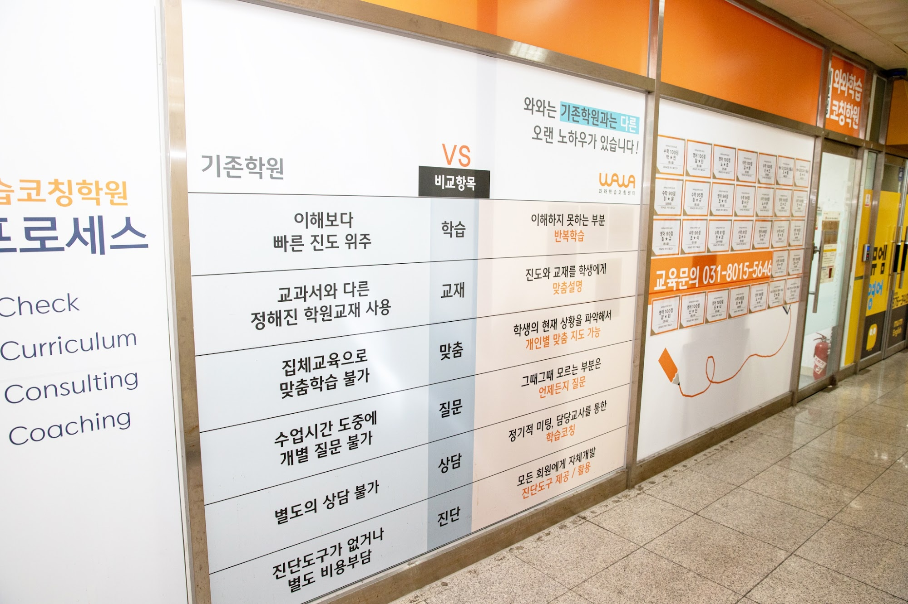
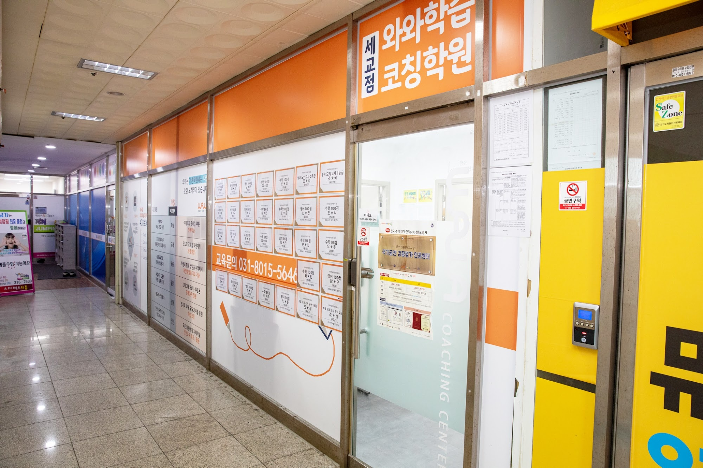

안녕하세요, 경기 오산시 금암동 세교신도시 와와학습코칭 세교점입니다. 여름방학이 어느새 막바지에 접어들었습니다. 오늘은 개학을 앞둔 방학 마무리와 2학기 대비 이야기를 학부모님께 전해드립니다.
곧 개학입니다 — 지금이 2학기의 출발선
방학이 끝나갈수록 공부 리듬이 흐트러지기 쉽습니다. 하지만 2학기 첫 시험은 개학 직후에 생각보다 빨리 다가옵니다. 세교점에서 문시중·세마중, 세교고 학군 학생들을 지도해 보면, 방학 끝자락의 2~3주를 어떻게 보내느냐가 2학기 첫 성적을 크게 가릅니다. 지금은 늘어진 생활 리듬을 학교 시간표에 맞게 되돌리고, 2학기 앞부분을 미리 훑어 두어야 할 때입니다.
세교신도시는 신설 학교가 많고 학구열이 높은 학군입니다. 그래서 세교점은 이 방학 마무리 시기에 개학 대비 전과목 코칭에 집중합니다. (2학기 정확한 시험 범위·일정은 학교 공지와 상담에서 함께 확인해 드립니다.)

세교점의 개학·2학기 대비 코칭
막연히 문제만 푸는 것으로는 부족합니다. 세교점은 이렇게 지도합니다.
- 수학 — 1학기 취약 단원을 짧게 메우고 2학기 앞 단원을 개념부터 선행, 틀린 유형을 분류해 약점을 좁히기 (오산 수학학원·수학 과외가 필요했던 학생에게)
- 영어 — 2학기 교과서 어휘·어법과 지문을 미리 익히고 서술형에 대비하기 (오산 영어학원·영어 과외)
- 국어 — 비문학 독해와 문학 개념을 학교 지문 중심으로 다지기 (국어학원)
- 과학·사회 — 개념을 흐름으로 이해하고 수행평가 유형을 미리 연습하기 (과학학원)
이렇게 방학 끝까지 흐름을 잡으면 2학기 첫 시험에서 출발선이 완전히 달라집니다.

기존 학원과 무엇이 다를까요
세교점은 진도만 빠르게 나가는 수업 대신, 학생이 스스로 계획하고 점검하는 힘을 길러 줍니다. 이해하지 못한 부분은 그냥 넘어가지 않고 반복학습으로 채우고, 진도와 교재는 학생의 현재 상황에 맞춰 조정합니다. 모르는 부분은 그때그때 질문하고, 담당 코치와의 정기 미팅으로 학습을 관리합니다. 와와의 4C 프로세스(Check·Curriculum·Consulting·Coaching)로 개학 뒤에도 흔들리지 않는 공부 습관을 만듭니다.

와와학습코칭 세교점 학년별 공부 방법
오산 와와학습코칭(와와학습코칭 세교점)은 초등학생·중학생·고등학생 각 학년에 맞는 공부 방법으로 지도합니다. 조용한 자습실·공부방에서 스스로 공부하고, 영어학원·수학학원·과학학원·국어학원처럼 과목별 코칭까지 한곳에서 받을 수 있습니다.
- 초등학생 (초3·초4·초5·초6) — 스스로 공부하는 습관과 기초 개념 잡기. 오산 세교 초등 수학학원·영어학원·공부방을 찾으신다면.
- 중학생 (중1·중2·중3) — 전과목 내신 대비와 고등 준비, 오답 정리와 서술형 훈련. 오산 중등 수학학원·영어학원·과학학원·국어학원.
- 고등학생 (고1·고2) — 내신과 수능을 함께 잡는 자기주도학습 플래닝과 취약 과목 집중. 오산 고등 영수학원·종합학원·자기주도학습.

와와학습코칭 세교점 위치와 주변
- 🚇 교통 — 세교신도시, 오산시 수청로 193 P&P세교프라자 4층
- 🏢 인근 아파트 — 세교자이·세교호반베르디움·물향기마을 등 금암동·세교 일대 단지에서 도보로 오실 수 있습니다.
와와학습코칭 세교점 인근 학교
오산 와와학습코칭(와와학습코칭 세교점)은 인근 학교 학생들의 내신·수능을 함께 준비합니다. 아래 학교에 다니는 학생이라면 영어학원·수학학원·과학학원·국어학원을 따로 찾을 필요 없이, 가까운 우리 센터에서 과목별 1:1 자기주도학습 코칭·과외를 받을 수 있습니다.
- 인근 초등학교 — 문시초등학교·금암초등학교·필봉초등학교 영어학원·수학학원·과학학원·국어학원·공부방
- 인근 중학교 — 문시중학교·세마중학교 영어 과외·수학 과외·과학학원·국어학원
- 인근 고등학교 — 세교고등학교 영어학원·수학학원·내신·과외
📍 와와학습코칭 세교점 센터 정보 자세히 보기 — 주소·전화·인근 학교 안내를 확인하실 수 있습니다.